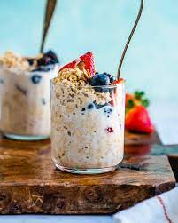

Overnight Oats

Description
Overnight oats are convenient and hearty breakfast option. Customize this dish with your favorite toppings!
Ingredients
- ½ cup rolled oats
- ½ milk of your choice
- 2 tbsp. honey or sweetener of choice
- toppings of choice (this recipe uses strawberries and granola)
Steps
- Pour oats into a mason jar or meal prep container
- Add milk and sweetener of choice
- Mix well and place in fridge for several hours or overnight
- Finish with toppings of choice!